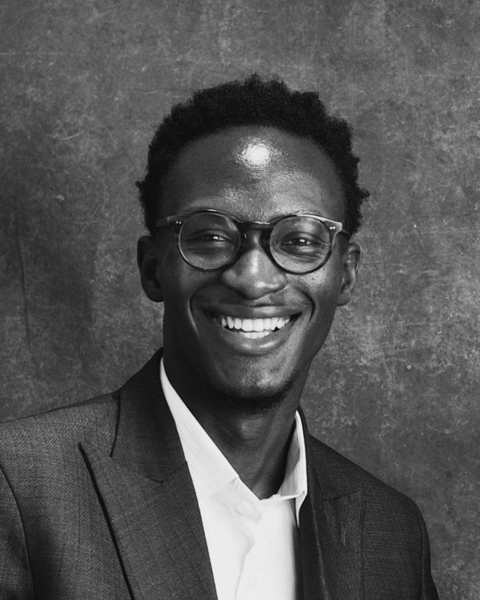
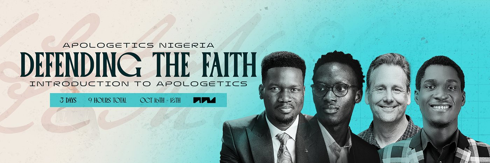

Apologetics Nigeria
We partner with churches, pastors, and ministry groups to equip believers to defend the faith and share the gospel — with clarity, confidence, and joy.
Ministry profile
Apologetics Nigeria
Non-denominational apologetics · Lagos, Nigeria
Who we serve
Churches &
believers
Where
Nigeria first,
open to all
Cost to the church
Free to
attend
A short profile of who we are, what we do, and the three ways anyone can stand with the work.
What we are
A non-denominational Christian apologetics ministry
Based in
Lagos, Nigeria
Founder
Oluwanifemi Adeniran (MANNORR)
Website
apologeticsnigeria.com
We build conviction inside the local church.
Apologetics Nigeria exists to build apologetics capacity where believers already serve — so that every partner church becomes a place where hard questions are welcomed, faith is grounded, and the gospel is shared with conviction.
We don't pull believers out of their churches. We come alongside the church, equip its people, and leave it stronger from the inside.

Founder
Oluwanifemi Adeniran
Founder & Lead Apologist
Oluwanifemi Adeniran founded Apologetics Nigeria out of a simple conviction: the church here deserves to be equipped — not merely encouraged, but genuinely prepared to answer the hardest questions of its generation.
For several years he served in apologetics ministry with churches across Ireland and the United Kingdom, teaching young believers to think clearly, hold their faith with conviction, and give an honest, gracious defense of the gospel. That work has now come home to Nigeria.
He brings together the two disciplines this ministry depends on — serious theological study and the craft of clear, compelling communication. He is currently pursuing graduate study in theology, working toward a doctorate in apologetics, and continues to teach, film, and engage these questions publicly.
His conviction is plain: the answer to a generation's doubts is not less Christianity, but a deeper, better-understood faith — carried by a church that knows what it believes, and why.
Why apologetics, and why now.
Nigeria has no shortage of Christianity. It has a shortage of grounding.
39%
The share of Nigeria's population projected to be Christian by 2050 — down from roughly 43–46% today, as the Muslim share rises toward 58%. Source — Pew Research Center
80–90%
Of pastors and church leaders across Africa have little or no formal biblical or theological training. Where training is scarce, false teaching meets little resistance. Source — World Evangelical Alliance · Langham Partnership
Rising
Irreligion among young Nigerians — sharpest among men under 30 — driven not by science, but by disillusionment with a faith many were never truly taught. Source — World Values Survey, 2025
A faith inherited but not understood does not survive the questions of a new generation.
Small, faithful, and built to last.
Five commitments shape every partnership we take on.
We equip a church's own people and leave the capability inside the church — never gathering a following of our own.
Wherever possible we equip existing leaders to carry apologetics forward themselves, so a small team can strengthen many congregations.
Twelve weeks moving from the existence of God, through the person and work of Jesus, to engaging Islam and atheism and starting real conversations.
Films, a podcast, courses, and social content — so the teaching reaches those who live online, not only those in the room.
A few committed partner churches first, real fruit documented, then expansion only on a foundation that has proven solid.
Training, curriculum, resources, media.
Four ways the work reaches people: in the room, in the local church, on the page, and online.
01 · Training
Training, workshops and conversations for the believers and leaders of a church or ministry — hosted by the church, taught by us, and built for the questions its people are actually being asked.
Invite us02 · Curriculum
A clear, structured course — from the existence of God to engaging Islam and atheism and starting real conversations — contextualised for the questions Nigerians are actually asking. Yours when you partner.
Request the outline03 · Resources
Twenty in-depth presentations and a growing set of films, each answering one hard question about Islam, atheism, Jesus, and the Bible. Free to read, watch and share at apologeticsnigeria.com/resources.
Free to use04 · Media
Films, a podcast, courses and social content, so the teaching reaches those who live online — not only those in the room.
@apologeticsnigeriaA free three-day introduction to apologetics, live online on 16–18 October 2026, 7–10PM WAT. Over two hundred people registered in a matter of weeks, from Lagos and Abuja to London and Houston. Every session is recorded, and replays, notes and slides go to everyone registered.

Our statement of faith.
Apologetics Nigeria is a non-denominational Christian ministry. We hold to the historic Christian faith — summarised in these affirmations, and the ground on which we teach and partner with churches.
The Bible is the inspired and authoritative Word of God — our final rule for faith and life.
There is one God, eternally existing in three persons: the Father, the Son, and the Holy Spirit.
Jesus is fully God and fully man — born of a virgin, sinless in life, crucified for our sins, and raised bodily from the dead.
Every person is made in God's image yet fallen in sin, and cannot save themselves by their own effort.
Salvation is a gift of God's grace, received through faith in Jesus Christ alone — not earned by works.
The Holy Spirit indwells, transforms, and empowers every believer to live and to witness for Christ.
The church is the body of Christ, called to worship God, grow in truth, and make disciples of all nations.
Every believer is called to share and defend the gospel — with clarity, courage, and love.
Jesus Christ will return in glory to judge the living and the dead, and to make all things new.
Three ways to stand with the work.
Host training, a workshop, or a conversation for the believers and leaders in your church or ministry. Write to hello@apologeticsnigeria.com and we will plan it around you.
Pray for grounded believers, a defended faith, and a generation that can give a reason for its hope.
Support with a one-off gift, a monthly partnership, or by sponsoring a specific training, film, or resource.
Give & sponsor
Recurring monthly partnership is the most valuable kind of support — it gives the work stability — while sponsorships let us take on larger projects. As our registration with the Corporate Affairs Commission (CAC) is completed, a dedicated ministry account will follow.
Give in Naira
Give internationally
* Every penny goes into the spread of the gospel.
Bring your craft to the work.
We are building a team of people who can actually do the work — designers, editors, writers, social media people — and who want their craft to count for something longer than a campaign.
Unpaid
We are not in a position to pay yet. We will not pretend otherwise, and we will not waste your time.
Remote
Everything runs online. Where you live does not matter — several of our people are outside Nigeria.
Experts, not enthusiasm
Send your portfolio, showreel or writing samples. We will actually look at them.
You get the credit — your name on the work, the pieces for your portfolio, and a reference whenever you need one. Apply at apologeticsnigeria.com/vol.
Apologetics Nigeria
“Always be prepared to give an answer to everyone who asks you to give the reason for the hope that you have. But do this with gentleness and respect.”
1 Peter 3:15
Website
Based in
Lagos, Nigeria
Grounded believers · defended faith · a generation that can give a reason for its hope.